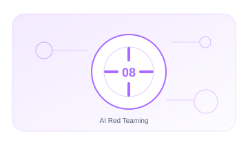

08 · PILAR
AI Red Teaming
Evaluar de forma controlada cómo puede fallar o ser abusado un sistema de IA.
EnfoqueTécnico, práctico y entendible
Contenido6 guías extensas y aplicables
Aplicable aOrganizaciones y sistemas reales

08.01 · GUÍA
Prompt Injection
Diseña pruebas seguras para inyección directa. indirecta y persistente.
16–22 min+1.648 palabrasAbrir guía →
08.02 · GUÍA
Jailbreaks
Evalúa la resistencia de políticas. guardrails y moderación sin confundir seguridad con censura.
15–21 min+1.534 palabrasAbrir guía →
08.03 · GUÍA
RAG Poisoning
Comprueba si contenido malicioso altera recuperación. decisiones o salidas.
15–21 min+1.535 palabrasAbrir guía →
08.04 · GUÍA
Tool Abuse
Prueba abuso de parámetros. permisos. secuencias y efectos laterales.
16–22 min+1.632 palabrasAbrir guía →
08.05 · GUÍA
MCP Supply Chain
Evalúa riesgos de servidores. cambios maliciosos y confianza en herramientas.
15–21 min+1.500 palabrasAbrir guía →
08.06 · GUÍA
Exfiltración y Model Extraction
Mide la posibilidad de extraer datos. secretos. comportamiento o propiedad intelectual.
15–21 min+1.527 palabrasAbrir guía →
01
AlcanceControl y evidencia aplicable
02
HipótesisControl y evidencia aplicable
03
PruebaControl y evidencia aplicable
04
EvidenciaControl y evidencia aplicable
05
RemediaciónControl y evidencia aplicable
Cada guía incluye explicación, implantación, controles, evidencias, errores habituales, métricas y referencias.